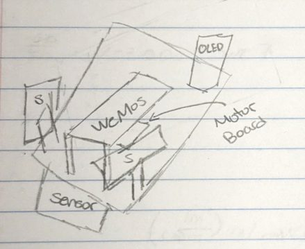
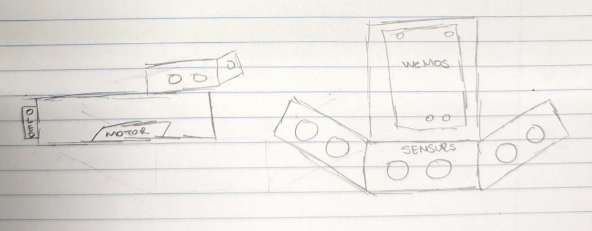
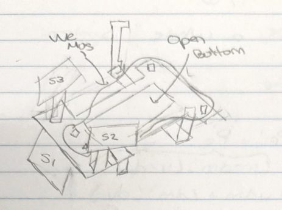
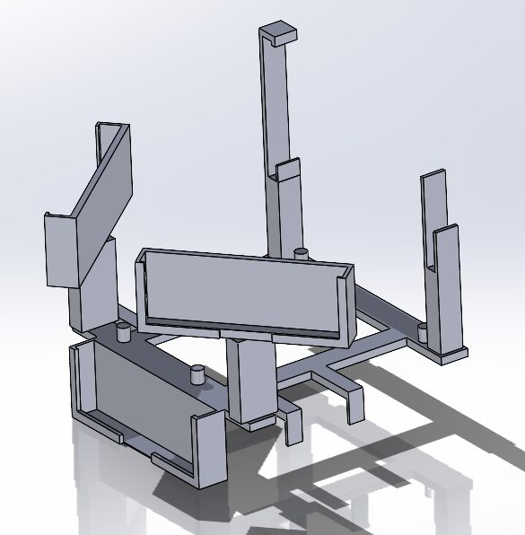
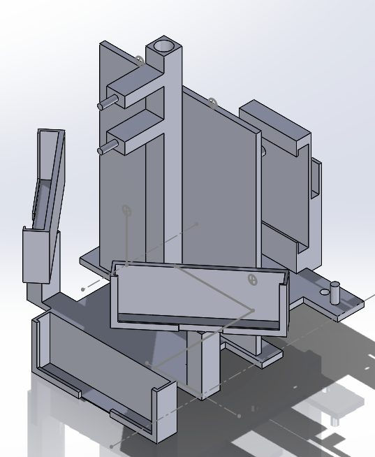
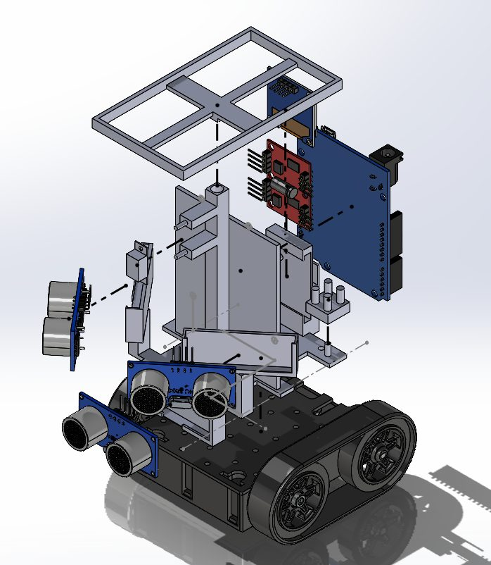
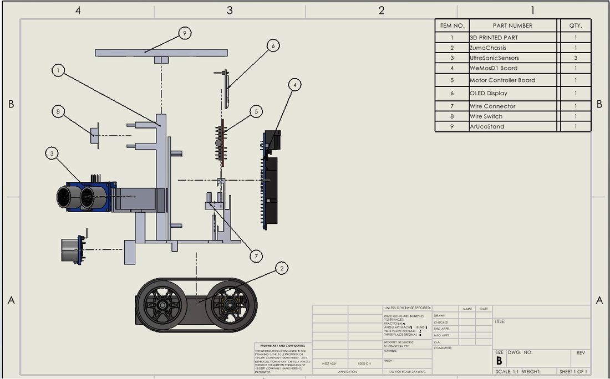
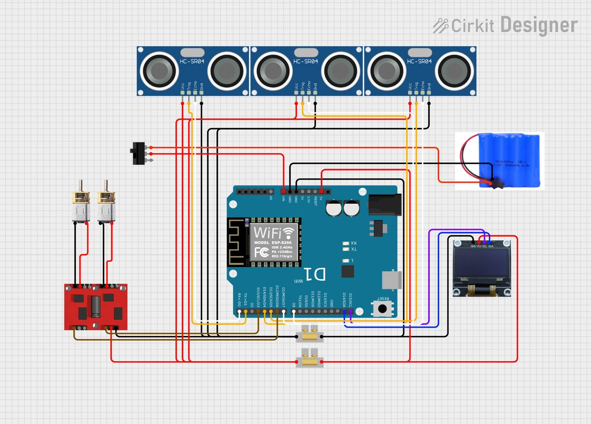
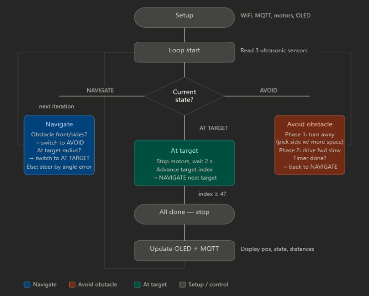
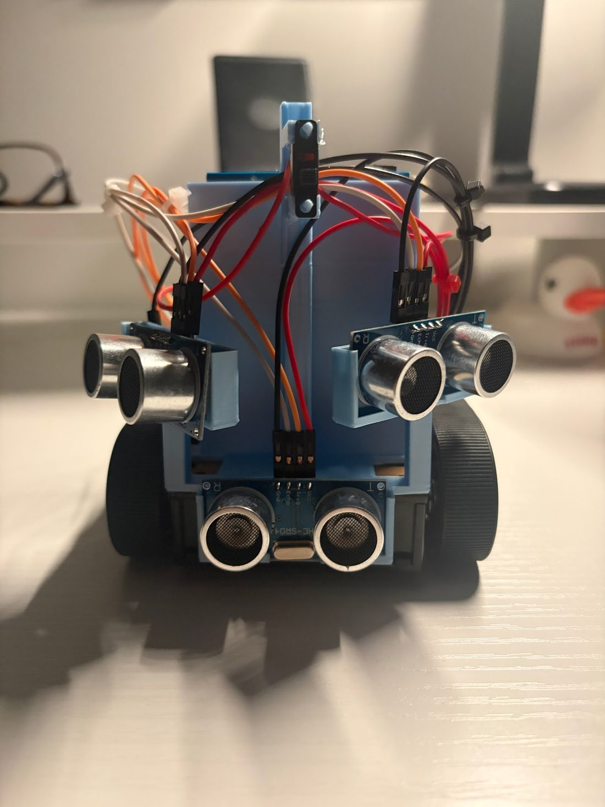

The challenge
Build a rover that reaches designated checkpoints in under three minutes using its X and Y coordinates from an MQTT network. A 3D printed attachment had to securely hold three ultrasonic sensors, an OLED display, a motor controller board, a WeMos D1 board, an ArUco marker stand, a wire connector and a power switch.
Over 14 weeks there were three tests: a road test, a left-hand loop and a final navigation course. Print time was limited to 4 hours for the first two and 5 hours for the final.
Concept design
We drew three sketches. The first laid the WeMos board flat with raised, angled side sensors to reduce blind spots. The second raised the WeMos board on a platform. The third stacked two layers with all sensors in a line. We chose the first because it had the least print time and was the simplest.



Final mechanical design
The WeMos board could not stay flat because we needed room for the ArUco stand and power switch, so we raised it to vertical. That put the motor board and OLED in the way of its wires, so we moved both to the back, which suited the motor wires. It also gave us space for a peg for the wire connector. The ArUco stand sits on top, and the two printed parts together took 4 hours 36 minutes.




Electrical design
The rover uses a WeMos D1R2 (ESP8266), three HC-SR04 ultrasonic sensors, a Feetech two-channel motor driver, two micro motors, a 4.8V Ni-MH battery pack, a 0.96 inch OLED and a power switch. Because the board has few 5V pins, the 5V line feeds a wire connection box that powers the sensors, OLED and motor driver. Power runs from the battery through the switch to the VIN pin, and two ground pins keep every component grounded before power-up.

Software
The code runs on a 100 ms loop with four states: navigate, avoid, target and done. In navigate, the rover works out its heading error and steers with different motor speeds. A front obstacle within 120 mm, or both side sensors under 180 mm, triggers avoidance. Within 140 mm of a waypoint it pauses for two seconds and moves on. After the fourth waypoint it stops.
Devin Thomas wrote the software.

Testing and results
The road test confirmed driving and turning. In the left-hand loop, the rover completed two circuits but drifted from small motor speed differences, which we fixed by tuning speed constants. The ArUco stand and switch mount were added to the print during this phase.
In the final test, the rover reached all four waypoints in 1 minute 37 seconds with zero collisions, and the attachment held every component securely.
